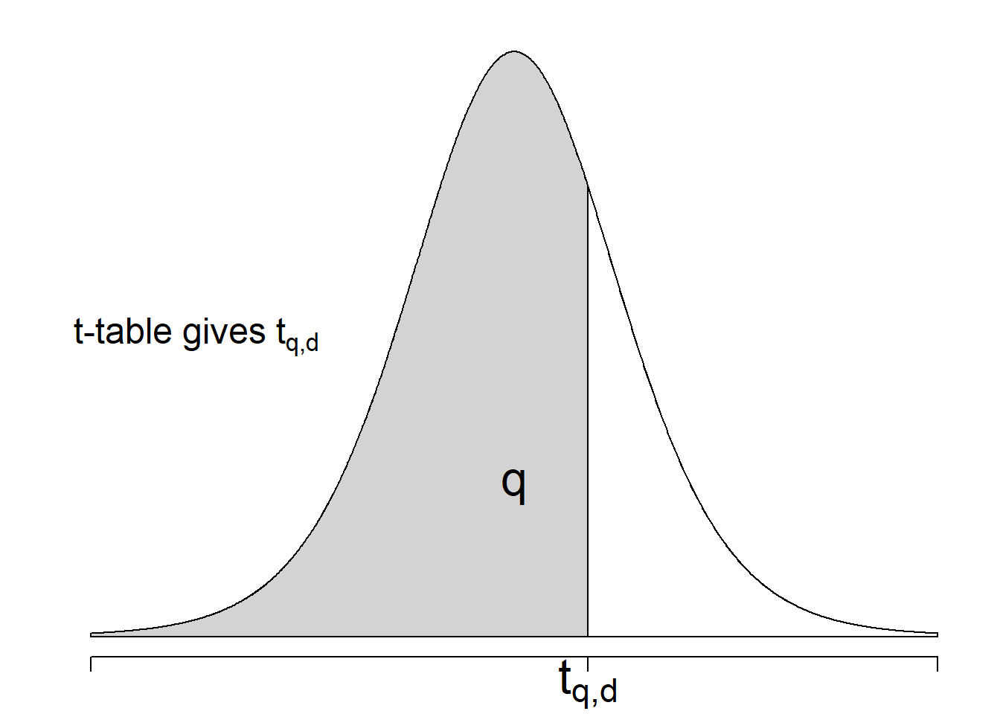

7 Confidence Intervals
In the last chapter, we have learned about sampling distribution and a very important theorem in Statistics: the Central Limit Theorem, which states that no matter which distribution you start with, as long as you have a large enough independent sample from an identical distribution, your sample mean will always approximately follow normal distribution. Now we have all the tools we need to do statistical inference, which was promised in Chapter 1.
Recall that statistical inference helps you use information from a sample to make conclusions about the population. There are two popular types of conclusions that we can make: (i) the intervals where the population parameter can lie in with high probabilities, i.e., confidence intervals; and (ii) the probabilistic answers to yes-no questions about the population parameter, i.e., hypothesis tests. In this chapter, we will first learn about confidence intervals.
7.1 Pivotal Quantity
An important tool for confidence intervals and hypothesis tests is pivotal quantity. A pivotal quantity \(Q_{\theta}\) for a population parameter \(\theta\) is a function of the random sample data \(X_1, X_2, ..., X_n\) and \(\theta\), i.e., \[Q_{\theta} = g(X_1, X_2, ..., X_n, \theta),\] so that the distribution of \(Q_{\theta}\) is the same for all values of \(\theta\).
Notes: In this chapter, we will be studying confidence intervals for the population mean \(\mu\). Therefore, we will focus our attention on pivotal quantities for \(\mu\).
7.1.1 Linearity of Normal Distribution
Recall in Chapter 5, we learn that
\[\text{If } X \sim \mathcal{N}(\mu, \sigma^2) \text{ then } a+bX \sim \mathcal{N}(a + b\mu, b^2\sigma^2)\]
7.1.2 Pivotal Quantity for the Mean of a Normal Population
Suppose our population is normal, i.e., \(X\sim \mathcal{N}(\mu, \sigma^2)\), and we have the sample \(X_1, X_2, ..., X_n\). Then from Chapter 6, we learn the property of normal distribution that
\[\bar{X}_n = \frac{X_1 + X_2 + ... + X_n}{n} \sim N\left(\mu, \frac{\sigma^2}{n}\right)\]
Note that \(\bar{X}_n\) here is not a pivotal quantity for \(\mu\) because
the formula of \(\bar{X}_n\) does not contain \(\mu\),
the distribution of \(\bar{X}_n\) changes as \(\mu\) changes.
How do we create a pivotal quantity for \(\mu\)? Because \(\bar{X}_n\) is normally distributed, let’s use the linearity property of normal distribution to transform \(\bar{X}_n\) into a \(Z\)-score
\[\frac{\bar{X}_n - \mu}{\sigma/\sqrt{n}} \sim \mathcal{N}(0,1)\]
Now, \(\frac{\bar{X}_n - \mu}{\sigma/\sqrt{n}}\) is a pivotal quantity for \(\mu\) because
it is a function of both the sample data \(X_1, X_2, ..., X_n\) and \(\mu\)
its distribution is always \(\mathcal{N}(0, 1)\) and does not change with \(\mu\).
7.1.3 Pivotal Quantity for Population Mean via CLT
Suppose our population has mean \(\mu\) and variance \(\sigma^2\), i.e., \(X \sim (\mu, \sigma^2)\) and again we have the data \(X_1, X_2, ..., X_n\). But now, if we do not assume a normal distribution and we know that our sample size is large enough, we can use the Central Limit Theorem, which says that the sample mean is approximately normal:
\[\bar{X}_n = \frac{X_1 + X_2 + ... + X_n}{n} \overset{\cdot}{\sim} N\left(\mu, \frac{\sigma^2}{n}\right)\]
to similarly construct the pivotal quantity for \(\mu\) when \(n\) is large
\[\frac{\bar{X}_n - \mu}{\sigma/\sqrt{n}} \overset{\cdot}{\sim} \mathcal{N}(0,1)\]
Notes: So, for
normal population \((\mu, \sigma^2)\) and sample size \(n\);
any population with mean \(\mu\) and variance \(\sigma^2\), and a large enough sample size (\(n > 30\));
the pivotal quantity for \(\mu\) is
\[Q_{\mu} = \frac{\bar{X}_n-\mu}{\sigma/\sqrt{n}} \sim \mathcal{N}(0,1)\]
7.1.4 Pivotal Quantity for \(\mu\) When \(\sigma\) is Unknown
We can see that the pivotal quantity in the previous sections involves not only \(\mu\) but also \(\sigma\). If \(\sigma\) is unknown, then it will no longer be a pivotal quantity for \(\mu\).
We however can approximate \(\sigma\) by the sample standard deviation \(S\): \[S = \sqrt{\frac{1}{n-1}\sum_{i=1}^n(X_i - \bar{X})^2}\] Note here that different from \(s\) (actual obtained value from the data set), \(S\) here is a random variable calculated from the random sample data \(X_1, X_2, ..., X_n\).
When we replace \(\sigma\) by \(S\), we have the following result
\[\frac{\bar{X}_n - \mu}{S/\sqrt{n}} \sim t(n-1)\]
where \(t(n-1)\) is the (central) \(t\)-distribution of \(n-1\) degrees of freedom18. Now, this is a pivotal quantity because
it is a function of both the sample data \(X_1, X_2, ..., X_n\) and \(\mu\). (\(S\) is also a function of the data)
its distribution is always \(t(n-1)\) and does not change with \(\mu\).
Thus, when \(\sigma\) is unknown, we can construct a confidence interval for \(\mu\) using this pivotal quantity.
7.1.4.1 The \(t\)-distribution
The (central) \(t\)-distribution has only one parameter, which is the degree of freedom \(df\).
The \(t\)-distribution is similar to the standard normal distribution in the sense that it is
symmetric around 0
unimodal
bell-shaped
It is different from the standard normal distribution in the sense that
It is more spread out. The spread of the distribution is controlled by the degrees of freedom parameter.
There is more probability in the tail areas (heavy-tailed). Therefore, there is less probability in the center of the distribution
Notes: As the degrees of freedom increase, the \(t\)-curve becomes closer to the standard normal curve.
Figure 7.1: The probability curves of the \(t\)-distributions. Notice that the tails of the \(t\)-distributions are fatter than that of the standard normal distribution. We say that the \(t\)-distributions are .
We will see how pivotal quantity helps us construct confidence intervals and hypothesis tests in the following sections and in Chapter 8.
7.2 Confidence Intervals
7.2.1 What is a Confidence Interval?
It is intuitive to use the sample mean \(\bar{X}_n\) to give an estimate of the population mean \(\mu\). However, this one point estimate (the observed actual number \(\bar{x}_n\)) does not reflect the uncertainty related to the random process to obtain the sample itself (i.e., each time we collect the data we will get a different set of observed values and a different number \(\bar{x}_n\)). That is, it does not say how sure we are when we say \(\mu \approx \bar{x}_n\) or how far \(\bar{x}_n\) is from \(\mu\).
To the rescue, confidence intervals provide an interval estimate, i.e., the range of plausible values where the population parameter of interest (here, \(\mu\)) lies within for a given probability. In this sense, confidence intervals acknowledge and quantify the uncertainty of the sample.
All confidence intervals are based on a level of confidence, \((1-\alpha)100\%\). Here \(\alpha\) is called the significance level. For example, for \(\alpha = 0.05\), we have a \(95\%\) confidence interval, and for \(\alpha = 0.01\), we have \(99\%\) confidence interval, …
7.2.2 Interpret a Confidence Interval
Now we are interested in the population mean \(\mu\). A \((1-\alpha)100\%\) confidence interval of \(\mu\) is of the form \((L_n, U_n)\) so that \[\mathbb{P}(L_n < \mu < U_n) = 1-\alpha\] where \(L_n\) and \(U_n\) are calculated from the sample \(X_1, ..., X_n\).
\(L_n\) and \(U_n\) are functions of random variables \(X_1, ..., X_n\). Therefore, they are also random variables. This means that with different observed sample data \(x_1, x_2, ..., x_n\), we will obtain a different confidence interval \((l_n, u_n)\).
\(\mathbb{P}(L_n < \mu < U_n) = 1-\alpha\) means: if we repeat collecting the sample of the same size \(n\) for many times and each times obtain a different interval \((l_n, u_n)\), then \((1-\alpha)100\%\) of those intervals will contain the true population parameter \(\mu\).
Figure 7.2: Suppose we are interested in the mean \(\mu\). If we repeat collecting samples many times and then calculate many \(95\%\) confidence intervals for \(\mu\), then \(95\%\) of those intervals will contain the true population parameter \(\mu\) (will cross the green vertical line) and \(5\%\) of the intervals will not contain \(\mu\).
Notes: There are two types of interpretations for a \((1-\alpha)100\%\) confidence interval of the population parameter \(\mu\)
the exact interpretation: If we repeat collecting samples and calculating confidence intervals, then \((1-\alpha)100\%\) of those intervals will contain \(\mu\) and \(100\alpha\%\) of the intervals will not contain \(\mu\).
the casual interpretation: we are \((1-\alpha)100\%\) confident that the true but unknown parameter \(\mu\) will lie within the interval.
- If someone asks: what do you mean by \((1-\alpha)100\%\) confident? \(\rightarrow\) Go to the exact interpretation.
7.3 Confidence Interval for \(\mu\) When \(\sigma\) is Known
7.3.1 Construct the Confidence Interval
From Section 7.1, we know that for
normal population \((\mu, \sigma^2)\) and sample size \(n\);
any population with mean \(\mu\) and variance \(\sigma^2\), and a large enough sample size \(n > 30\);
the pivotal quantity for \(\mu\) is
\[Q_{\mu} = \frac{\bar{X}_n-\mu}{\sigma/\sqrt{n}} \sim \mathcal{N}(0,1)\]
We can construct a \((1-\alpha)100\%\) confidence interval for \(\mu\) from the \(Q_\mu\), starting by finding the interval \((a, b)\) such that
\[\begin{align*} 1-\alpha & = \mathbb{P}(a < Q_{\mu} < b) \\ & = \mathbb{P}\left(a < \frac{\bar{X}_n-\mu}{\sigma/\sqrt{n}} < b\right) \\ & = \mathbb{P}\left(\bar{X}_n - b\times \frac{\sigma}{\sqrt{n}} < \mu < \bar{X}_n - a\times \frac{\sigma}{\sqrt{n}}\right) \end{align*}\]
So for \((a, b)\) such that \(\mathbb{P}(a < Q_{\mu} < b) = 1-\alpha\), \[\left(\bar{X}_n - b\times \frac{\sigma}{\sqrt{n}}, \bar{X}_n - a\times \frac{\sigma}{\sqrt{n}}\right)\] is a confidence interval for \(\mu\).
But how to find \(a\) and \(b\)? Because \(Q_{\mu} \sim \mathcal{N}(0, 1)\), any number \(a\) or \(b\) which satisfy \(\mathbb{P}(a < Z < b) = 1-\alpha\) will work! Note that this is why I always say “a” confidence interval, not “the” confidence interval.
Now, let \(z_{q}\) denote the \(q\)-quantile of \(Z\) (i.e., \(\mathbb{P}(Z < z_q) = q\)). Then some choices of \(a\) and \(b\) are
\(a = -\infty\) and \(b = z_{1-\alpha}\)
\(a = z_{\alpha}\) and \(b = +\infty\)
\(a = z_{m}\) and \(b = z_{1-\alpha+m}\) for some number \(0 < m < \alpha\).
The three choices are illustrated by the following figure
Figure 7.3: Possible choices of interval \((a,b)\) that satisfy \(\mathbb{P}(a < Z < b) = 1-\alpha\)
Convention: choose the third option and let \(m = \alpha/2\), meaning \(a = z_{\alpha/2}\) and \(b = z_{1-\alpha/2}\), so that \[a = -b = -z_{1-\alpha/2}\] and the interval \((a,b)\) will be symmetric. This is because the standard normal distribution is symmetric around 0! This choice is illustrated by the figure below.
Figure 7.4: We choose a symmetric interval \((a,b)\) where \(a = z_{\alpha/2}\) and \(b = z_{1-\alpha/2}\)
Replace \(a\) and \(b\) into our formula of confidence intervals, we have a \((1-\alpha)100\%\) confidence interval for \(\mu\)
\[\left(\bar{X}_n - z_{1-\alpha/2}\times \frac{\sigma}{\sqrt{n}}, \bar{X}_n + z_{1-\alpha/2}\times \frac{\sigma}{\sqrt{n}}\right)\]
So, the probability that \(\mu\) lies between \(\left(\bar{X}_n - z_{1-\alpha/2}\frac{\sigma}{\sqrt{n}}, \bar{X}_n + z_{1-\alpha/2}\frac{\sigma}{\sqrt{n}}\right)\) is \(1-\alpha\) and therefore it is a confidence interval for \(\mu\). Short notation for such a confidence interval: \[\bar{X}_n \pm z_{1-\alpha/2}\frac{\sigma}{\sqrt{n}}\]
If we replace \(\bar{X}_n\) by the actual observed value \(\bar{x}_n\), we obtain an actual value of the \((1-\alpha)100\%\) confidence interval \[\bar{x}_n \pm z_{1-\alpha/2}\frac{\sigma}{\sqrt{n}}\]
Example 7.1 The Organisation for Economic Co-operation and Development (OECD) surveyed \(1000\) people at random in each of its member countries in \(2011\). They found that the number of hours worked by Canadians was \(1699\) hours per year on average, whereas for the average OECD country it was \(1739\). Assume that the population standard deviation for Canadians is 486 hours. Do Canadians work less than the average OECD countries?
Create a \(95\%\) confidence interval for the population mean?
Create a \(99\%\) confidence interval for the population mean?
Solution: For this question, \(n = 1000\), \(\bar{x} = 1699\), \(\sigma = 486\).
\(95\%\) confidence interval means \(1-\alpha = 0.95\) and \(\alpha = 0.05\). Then \(\alpha/2 = 0.05\) and \(z_{1-\alpha/2} = z_{0.975}\). Look at the table, \(z_{0.975} = -z_{0.025} = 1.96\). Hence, a \(95\%\) confidence interval for \(\mu\) is
\[\bar{x} \pm z_{1-\alpha/2}\frac{\sigma}{\sqrt{n}} = 1699 \pm 1.96\times \frac{486}{\sqrt{1000}} = (1668.88, 1729.12)\]
Because this confidence interval lies entirely below the value of \(1739\) and hence at a \(95\%\) confidence level the data suggests that on average Canadians work less than the OECD average.
\(99\%\) confidence interval means \(\alpha = 0.01\) and \(z_{1-\alpha/2} = z_{0.995} = -z_{-0.005} = 2.575\). So a \(99\%\) confidence interval for \(\mu\) is
\[\bar{x} \pm z_{1-\alpha/2}\frac{\sigma}{\sqrt{n}} = 1699 \pm 2.575\times \frac{486}{\sqrt{1000}} = (1659.43, 1738.57)\]
Again, even when we increase the confidence level and obtain a wider the confidence interval, it still lies entirely below the value of \(1739\). Hence at a \(99\%\) confidence level the data suggests that on average Canadians work less than the OECD average.
Notes: In Example 7.1, we can interpret the \(95\%\) confidence interval \((1668.88, 1729.12)\) as “we are \(95\%\) confident that the true but unknown average number of hours worked by Canadians lies between 1668.88 hours and 1729.12 hours”.
Exercise 7.1 A management consulting firm has installed a new computer-based billing system in a trucking company. To determine if this system is better than the old billing system, the firm collects the payment times of \(65\) new payments. They find that the mean of the \(65\) payment times is \(18.11\) and from previous knowledge it is known that \(\sigma=4.2\).
Create a \(95\%\) confidence interval for the mean payment time using the new system.
The mean payment time using the old billing system was approximately \(39\) days. Based on the interval found in (a), does the new system appear to be better? Explain.
7.3.2 Margin of Error
For the confidence interval \(\bar{x}_n \pm z_{1-\alpha/2}\frac{\sigma}{\sqrt{n}}\):
the length of the confidence interval is \(2\times z_{1-\alpha/2}\frac{\sigma}{\sqrt{n}}\)
the margin of error is \(m = z_{1-\alpha/2}\frac{\sigma}{\sqrt{n}}\).
So, the size of a confidence interval (CI) depends on
the confidence level \((1-\alpha)100\%\): When the confidence level increases, the CI gets wider because \(z_{a} < z_{b}\) if \(a < b\).
- If we want to be more confident about our conclusion, we need to include more possible values for \(\mu\) and so the CI needs to be wider.
the standard deviation \(\sigma\): When \(\sigma\) increases, the CI gets wider.
- Notice that \(\sigma\) describes the variability in the population distribution of \(X\) to begin with. When the variability in the population is already large, in repeated sampling, the values of the data \(X_1, X_2, ..., X_n\) will vary more and \(\bar{X}_n\) will be often farther from \(\mu\). So the CI needs to become wider to make sure that \(\mu\) is covered.
the sample size \(n\): When \(n\) increases, the CI gets narrower.
- When the sample size increases, the sample we collect become closer to the population, making us closer to the true parameter \(\mu\), hence the CI becomes narrower.
Notes: A good CI will give us precise conclusion with high confidence, hence it should be narrow and of high confidence level.
7.3.3 Determining the Minimum Sample Size \(n\)
From the formula \[m = z_{1-\alpha/2}\frac{\sigma}{\sqrt{n}}\] we can determine the sample size before the sample is collected if we specify the margin of error, the level of confidence and if we know \(\sigma\).
For example, if we want that our margin of error to be of certain level \(m\), i.e., we want our estimate \(\bar{x}_n\) to be at most \(m\) away from the true population parameter \(\mu\) at a confidence level \(1-\alpha\), then solving \[z_{1-\alpha/2} \times \frac{\sigma}{\sqrt{n}} \le m\] we have \[n \ge \left(\frac{z_{1-\alpha/2}\times\sigma}{m} \right)^2\]
This is the minimum sample size required when you are planning on drawing a simple random sample (SRS) from the population (i.e., you obtain iid sample data \(X_1, X_2, ..., X_n\))
This provides you with a guideline to the required sample size
Sometimes, you may find that this value is not achievable in real-life due to time and budget constraints, or it is simply not practical.
Example 7.2 In a survey done of Black Friday shoppers, one question was “How many hours do you usually spend shopping on Black Friday?” How many shoppers should be included in a sample designed to estimate the average number of hours spent shopping on Black Friday if you want the to estimate to deviate no more than \(0.5\) hour from the true mean? Assume you want \(95\%\) confidence and \(\sigma=3\).
Solution:
In this question
the desired margin of error is \(m = 0.5\)
the confidence level is \(95\%\) so we use \(z_{0.975} = 1.96\)
the population standard deviation \(\sigma = 3\)
Hence, the sample size required is \[\begin{align*} n & \ge \left(\frac{z_{1-\alpha/2}\times \sigma}{m}\right)^2 \\ & \ge \left(\frac{1.96 \times 3}{0.5}\right)^2 \\ & \ge 138.2976 \\ n & \ge 139 \end{align*}\]
So we need to interview at least \(139\) people.
Exercise 7.2 In Example 7.2, what will happen if the desired level of confidence is \(90\%\)?
7.4 Confidence Interval for \(\mu\) When \(\sigma\) is Unknown
7.4.1 Construct the Confidence Interval
In reality, it is common that we do not know \(\sigma\) of the population. Therefore cannot use the method of Section 7.3 to construct confidence intervals. We have to alter the method and use another pivotal quantity from Section 4.1.4.
\[\frac{\bar{X}_n-\mu}{S/\sqrt{n}} \sim t(n-1)\]
Let \(t_{q,d}\) denote the \(q\)-quantile of the \(t\)-distribution with \(d\) degrees of freedom, i.e., if \(T \sim t(d)\) then \(\mathbb{P}(T \le t_{q,d}) = q\). Since \(t\) is also symmetric around 0, we can construct the confidence interval in a similar way as we did in Section 7.3 where \(\sigma\) is known, but replace
the population standard deviation \(\sigma\) by the sample standard deviation \(s\);
the standard normal distribution by the \(t(n-1)\) distribution,
then we can obtain a \((1-\alpha)\%\) confidence interval for \(\mu\) as \[\bar{x}_n \pm t_{1-\alpha/2,n-1}\frac{s}{\sqrt{n}}.\]
Similar as the normal distribution, we need to look up for \(t_{1-\alpha/2,n-1}\) from the \(t\)-table. The \(t\)-table shows the \(t_{d,q}\) values for different degrees of freedom \(d\) and quantile \(q\).
\(t\)-table:
| df | \(t_{0.80}\) | \(t_{0.85}\) | \(t_{0.90}\) | \(t_{0.95}\) | \(t_{0.975}\) | \(t_{0.99}\) | \(t_{0.995}\) | \(t_{0.999}\) | \(t_{0.9995}\) |
|---|---|---|---|---|---|---|---|---|---|
| 1 | 1.3764 | 1.9626 | 3.0777 | 6.3138 | 12.7062 | 31.8205 | 63.6567 | 318.3088 | 636.6192 |
| 2 | 1.0607 | 1.3862 | 1.8856 | 2.9200 | 4.3027 | 6.9646 | 9.9248 | 22.3271 | 31.5991 |
| 3 | 0.9785 | 1.2498 | 1.6377 | 2.3534 | 3.1824 | 4.5407 | 5.8409 | 10.2145 | 12.9240 |
| 4 | 0.9410 | 1.1896 | 1.5332 | 2.1318 | 2.7764 | 3.7469 | 4.6041 | 7.1732 | 8.6103 |
| 5 | 0.9195 | 1.1558 | 1.4759 | 2.0150 | 2.5706 | 3.3649 | 4.0321 | 5.8934 | 6.8688 |
| 6 | 0.9057 | 1.1342 | 1.4398 | 1.9432 | 2.4469 | 3.1427 | 3.7074 | 5.2076 | 5.9588 |
| 7 | 0.8960 | 1.1192 | 1.4149 | 1.8946 | 2.3646 | 2.9980 | 3.4995 | 4.7853 | 5.4079 |
| 8 | 0.8889 | 1.1081 | 1.3968 | 1.8595 | 2.3060 | 2.8965 | 3.3554 | 4.5008 | 5.0413 |
| 9 | 0.8834 | 1.0997 | 1.3830 | 1.8331 | 2.2622 | 2.8214 | 3.2498 | 4.2968 | 4.7809 |
| 10 | 0.8791 | 1.0931 | 1.3722 | 1.8125 | 2.2281 | 2.7638 | 3.1693 | 4.1437 | 4.5869 |
| 11 | 0.8755 | 1.0877 | 1.3634 | 1.7959 | 2.2010 | 2.7181 | 3.1058 | 4.0247 | 4.4370 |
| 12 | 0.8726 | 1.0832 | 1.3562 | 1.7823 | 2.1788 | 2.6810 | 3.0545 | 3.9296 | 4.3178 |
| 13 | 0.8702 | 1.0795 | 1.3502 | 1.7709 | 2.1604 | 2.6503 | 3.0123 | 3.8520 | 4.2208 |
| 14 | 0.8681 | 1.0763 | 1.3450 | 1.7613 | 2.1448 | 2.6245 | 2.9768 | 3.7874 | 4.1405 |
| 15 | 0.8662 | 1.0735 | 1.3406 | 1.7531 | 2.1314 | 2.6025 | 2.9467 | 3.7328 | 4.0728 |
| 16 | 0.8647 | 1.0711 | 1.3368 | 1.7459 | 2.1199 | 2.5835 | 2.9208 | 3.6862 | 4.0150 |
| 17 | 0.8633 | 1.0690 | 1.3334 | 1.7396 | 2.1098 | 2.5669 | 2.8982 | 3.6458 | 3.9651 |
| 18 | 0.8620 | 1.0672 | 1.3304 | 1.7341 | 2.1009 | 2.5524 | 2.8784 | 3.6105 | 3.9216 |
| 19 | 0.8610 | 1.0655 | 1.3277 | 1.7291 | 2.0930 | 2.5395 | 2.8609 | 3.5794 | 3.8834 |
| 20 | 0.8600 | 1.0640 | 1.3253 | 1.7247 | 2.0860 | 2.5280 | 2.8453 | 3.5518 | 3.8495 |
| 21 | 0.8591 | 1.0627 | 1.3232 | 1.7207 | 2.0796 | 2.5176 | 2.8314 | 3.5272 | 3.8193 |
| 22 | 0.8583 | 1.0614 | 1.3212 | 1.7171 | 2.0739 | 2.5083 | 2.8188 | 3.5050 | 3.7921 |
| 23 | 0.8575 | 1.0603 | 1.3195 | 1.7139 | 2.0687 | 2.4999 | 2.8073 | 3.4850 | 3.7676 |
| 24 | 0.8569 | 1.0593 | 1.3178 | 1.7109 | 2.0639 | 2.4922 | 2.7969 | 3.4668 | 3.7454 |
| 25 | 0.8562 | 1.0584 | 1.3163 | 1.7081 | 2.0595 | 2.4851 | 2.7874 | 3.4502 | 3.7251 |
| 26 | 0.8557 | 1.0575 | 1.3150 | 1.7056 | 2.0555 | 2.4786 | 2.7787 | 3.4350 | 3.7066 |
| 27 | 0.8551 | 1.0567 | 1.3137 | 1.7033 | 2.0518 | 2.4727 | 2.7707 | 3.4210 | 3.6896 |
| 28 | 0.8546 | 1.0560 | 1.3125 | 1.7011 | 2.0484 | 2.4671 | 2.7633 | 3.4082 | 3.6739 |
| 29 | 0.8542 | 1.0553 | 1.3114 | 1.6991 | 2.0452 | 2.4620 | 2.7564 | 3.3962 | 3.6594 |
| 30 | 0.8538 | 1.0547 | 1.3104 | 1.6973 | 2.0423 | 2.4573 | 2.7500 | 3.3852 | 3.6460 |
| 40 | 0.8507 | 1.0500 | 1.3031 | 1.6839 | 2.0211 | 2.4233 | 2.7045 | 3.3069 | 3.5510 |
| 60 | 0.8477 | 1.0455 | 1.2958 | 1.6706 | 2.0003 | 2.3901 | 2.6603 | 3.2317 | 3.4602 |
| 80 | 0.8461 | 1.0432 | 1.2922 | 1.6641 | 1.9901 | 2.3739 | 2.6387 | 3.1953 | 3.4163 |
| 100 | 0.8452 | 1.0418 | 1.2901 | 1.6602 | 1.9840 | 2.3642 | 2.6259 | 3.1737 | 3.3905 |
| 1000 | 0.8420 | 1.0370 | 1.2824 | 1.6464 | 1.9623 | 2.3301 | 2.5808 | 3.0984 | 3.3003 |
| z | 0.8416 | 1.0364 | 1.2816 | 1.6449 | 1.9600 | 2.3263 | 2.5758 | 3.0902 | 3.2905 |
Example 7.3 Using the \(t\)-table
Find \(\mathbb{P}(T < 0.92)\) if \(T\) has \(5\) \(\mathrm{df}\).
- Solution: Look at the \(5\)th row and first column, the cell is approximately \(0.92\). The column is \(t_{0.80}\) so \(q = 0.8\) and \(\mathbb{P}(T < 0.92) = 0.8\).
Find \(c\) so that \(\mathbb{P}(T < c) = 0.975\).
- Solution: Look at the \(8\)th row and column \(t_{0.975}\), we find \(c = 2.3060\).
Find \(c\) so that \(\mathbb{P}(-c < T < c) = 0.95\).
- Solution: \(1-\alpha = 0.95\), so \(\alpha = 0.05\) and \(1-\alpha/2 = 0.975\). So \(c = t_{0.975,8} = 2.3060\).
Example 7.4 A random sample of \(20\) purchases at an Internet music site a mean purchase amount of \(\$45.26\), and a standard deviation of \(\$20.67\).
Construct a \(90\%\) confidence interval for the mean purchases of all customers.
How would the confidence interval change if you had assumed that the population standard deviation \(\sigma\) is known to be \(\$20\).
Solution:
In this question: \(n = 20\), \(\bar{x} = 45.26\) and \(s = 20.67\)
Since we want a \(90\%\) CI, \(\alpha = 1-0.9=0.1\) and we need to look for \(t_{1-\alpha/2,n-1} = t_{0.95,19} = 1.7291\). So a \(90\%\) CI for \(\mu\) is \[\bar{x} \pm t_{1-\alpha/2,n-1} \frac{s}{\sqrt{n}} = 45.26 \pm 1.7291\times\frac{20.67}{\sqrt{20}} = (37.27, 53.25)\]
If we assume that \(\sigma=20\) then we would use it instead of \(s\). In addition, our critical value would come from the standard normal table, where \(z_{1-\alpha/2}=1.645\). Hence collectively this would cause our interval in a) to get narrower.
You can also conveniently use R to find the quantiles and probabilities of the \(t\)-distribution using functions qt() and pt(). It is in the similar fashion with the normal distribution. For example
qt(0.7, df = 13)## [1] 0.5375041means that \(P(X < 0.538) = 0.7\) where \(X\sim t(13)\). Another example is
pt(3, df = 10)## [1] 0.9933282means that \(P(X < 3) = 0.9933\) where \(X\sim t(10)\).
Notes:
When the degree of freedom is greater than 30, i.e., we can not look for the exact value in the \(t\)-table, we choose the closest degree of freedom to ours. If the degree of freedom is greater than 1000, we can just use the \(Z\)-table instead (or the last row of the \(t\)-table).
In this section, we have assumed that the data is normally distributed. However, even when the data is not normal, by approximation, you can still use the \(t\)-table if either
\(n < 15\) and the data is close to normal (symmetric, unimodal, no outliers)
or \(n \ge 15\), except if the data distribution is strongly skewed or if it has outliers
or \(n \ge 40\): any data distribution is fine.
7.4.2 Determine the Sample Size
In the \(t\)-distribution case, we cannot use the same analogy as in the case where \(\sigma\) is known, i.e., we cannot use \[n \ge \left(\frac{t_{1-\alpha/2,n-1}\times s}{m}\right)^2\] because we need to know \(n\) because the degree of freedom is required for \(t_{1-\alpha/2,n-1}\).
Instead, we will always calculate the sample size using the \(Z\)-table and the formula \[n \ge \left(\frac{z_{1-\alpha/2}\times s}{m}\right)^2\] where \(s\) can be an guess of \(\sigma\) or a known \(s\) from previous data.
7.5 Summary
For normal population or for \(n\) large:
| Cases | Pivotal Quantity | \((1-\alpha)100\%\) CI | Minimum \(n\) so CI margin not exceed \(m\) |
|---|---|---|---|
| \(\sigma\) known | \(\frac{\bar{X}_n - \mu}{\sigma/\sqrt{n}}\) | \(\bar{x}_n \pm z_{1-\alpha/2}\frac{\sigma}{\sqrt{n}}\) | \(n \ge \left(\frac{z_{1-\alpha/2}\times \sigma}{m}\right)^2\) |
| \(\sigma\) unknown | \(\frac{\bar{X}_n - \mu}{s/\sqrt{n}}\) | \(\bar{x}_n \pm t_{1-\alpha/2, n-1}\frac{s}{\sqrt{n}}\) | \(n \ge \left(\frac{z_{1-\alpha/2}\times s}{m}\right)^2\) |
This is to differentiate between central \(t\)-distribution and non-central \(t\)-distribution. From now on, we will call it \(t\)-distribution for short because we will only look at central \(t\)-distributions in this book.↩︎